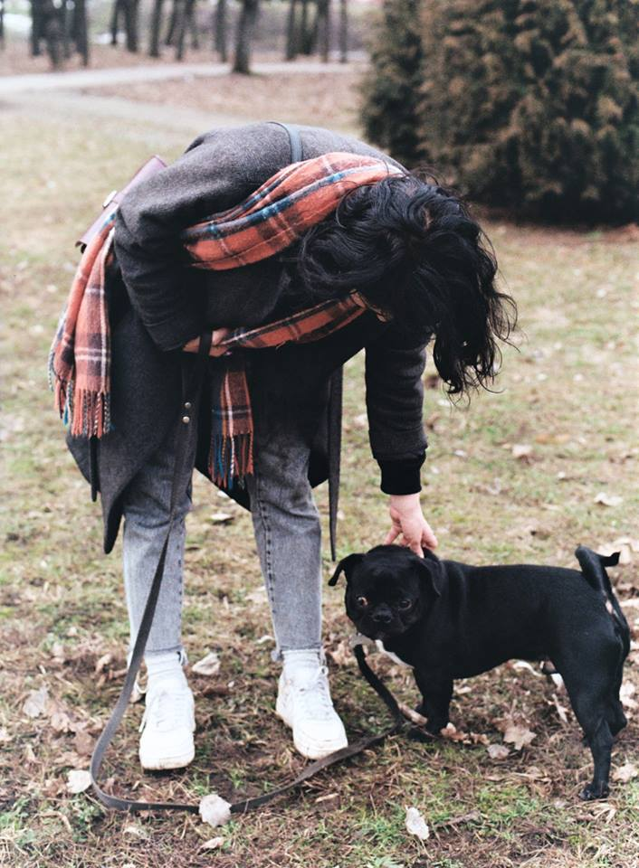

Проблеми слід вирішувати
Пряма мова хазяйки Шекеля:
Мої поради тим, хто хоче взяти собаку. Сідайте, думаєте, чи готові. Хто гулятиме, хто годуватиме, хто прибиратиме? Що собака робитиме, коли нікого немає вдома? Чи готові нести фінансові витрати на корм, вітаміни, ветеринара та кінолога?
Я часто стикаюся з тим, що люди не знають, про собачу психіку нічого. Думають, підстилку кинув, корм насипав і вистачить. Проблеми слід вирішувати. Є зоопсихологи, невропатологи та інші фахівці, здатні допомогти. Не варто сподіватися лише на себе.
Згадала класну фразу, яка допомогла: "Кінолог не вчить собаку бути собакою. Він вчить вас бути господарем собаки". Вважаю, що заняття є обов'язковими. Дім готувати не треба було. Але з'явилися, звісно, кульки, м'ячики, канатики, порожні пляшки та інші радощі у промислових кількостях.
Знаю, що від мене залежить здоров'я Шекеля, його корм, комфорт та безпека. Це зобов'язує, але й приносить неймовірний кайф!